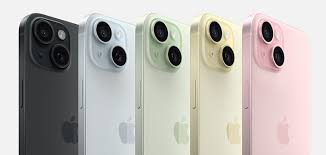

携帯電話の歴史は1973年にモトローラの技術者マーティン・クーパーが初めて携帯電話を発明したことに始まります。 初期の携帯電話は非常に大きく、高価であり、主にビジネス用途で使用されました。
1990年代に入り、デジタル技術が携帯電話に導入されました。これにより、通話の品質が向上し、より多くの人々が携帯電話を利用するようになりました。 SMS（ショートメッセージサービス）もこの時期に登場しました。
2000年代後半には、スマートフォンが登場し、携帯電話は通信手段だけでなく、多機能なデバイスへと進化しました。 特に2007年に発売されたiPhoneは、スマートフォン市場を大きく変革しました。
現在では、携帯電話は高速インターネット、GPS、カメラなど多くの機能を備えており、日常生活に欠かせないツールとなっています。
